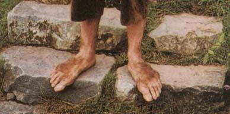

Welcome to Hobbit Facts. If you want to learn more about hobbits, those fascinating and hardy little creatures, then you've come to the right place! We're always adding new facts, so check back frequently for more facts!
Hobbits don't like to wear shoes! They go barefoot much of the time, but it's okay because they have very hardy feet and can walk on anything.
Hobbits are very good at throwing! If you see a hobbit hefting a rock, WATCH OUT!
Hobbits love to eat, and have 7 meals each day. Those meals are: breakfast, second breakfast, elevensies, luncheon, afternoon tea, dinner, and supper.
Hobbits are really generous! On their birthdays, they give other people presents.
Hobbits love to dress in bright colors, and they especially like yellow and green.